PrismNext
Abstract
PrismNext unifies read → design → run → write → review on a single local desk. Structured around a Teams v2 multi-agent architecture and a unified terminal execution plane, a modular research team (Lead orchestrator + domain specialists + MCP tools) operates directly across a Zotero/MinerU-synced SQLite library, monitored experiment runs, notes, git, and native LaTeX. Distributed as one single installer across all platforms: free core loop out of the box, with specialty pro teams unlocked instantly via local license verification.
Keywordslocal-first · Teams v2 · execution plane · LaTeX · literature · provenance · gated multi-agent
§1 The research loop
Ideation, literature, experiments, and writing stay on the same local desk — staffed by the active Team, not four disconnected tools.
-
01
Ideation & Plan
Problem formulation, Brief, and interactive Plan (⌥P) approval gates.
-
02
Literature
SQLite library, Zotero sync, MinerU parsing, and continuous citation auditing.
-
03
Experiment
Unified terminal execution plane, live Job Monitor, and Methods provenance.
-
04
Writing
First-class LaTeX, bundled Tectonic compilation, and Proposed Changes merge diffs.
§2 System Architecture
PrismNext is built on four core engineering pillars designed for rigorous, reproducible scientific computing.
-
01
The Desk & Security Boundary
A project is a directory on your local filesystem. All structured metadata, SQLite databases, and caches live inside .prismnext/. File watchers and markdown links are strictly locked to the authorized project root.
-
02
Teams v2 Multi-Agent Engine
Agency is structured into modular Teams (exactly 1 Lead orchestrator + specialist subagents + skills + MCP tools). Supports global App-level suites and project-level repos (project.local), resolved via deterministic precedence. Always-on hangars (Common & Project Team) guarantee zero-downtime chat fallbacks.
-
03
Unified Terminal Execution Plane
Chat bash commands and experiment runs share a unified executionId state machine. The read-only Job Monitor attaches directly to active process streams. Auto-logs receipts (command, exit code, duration, transcript, outputs) into runs.jsonl for direct citation in Methods.
-
04
Open-Core & Unified Single Installer
The core desktop shell and compiler engine are open source (Apache-2.0). Official releases ship as one unified binary across macOS, Windows, and Linux. Free features are unlocked out of the box; pro specialty teams are verified locally without cloud roundtrips.
§3 Capabilities
Evidence over adjectives — nine integrated surfaces shipping in today's build, themed live by the header palette.
One prompt box, staffed by the active Team
Select a Team, model, and allowed skills. Aim the composer across literature discovery, mathematical derivations, experiment execution, or LaTeX drafting.
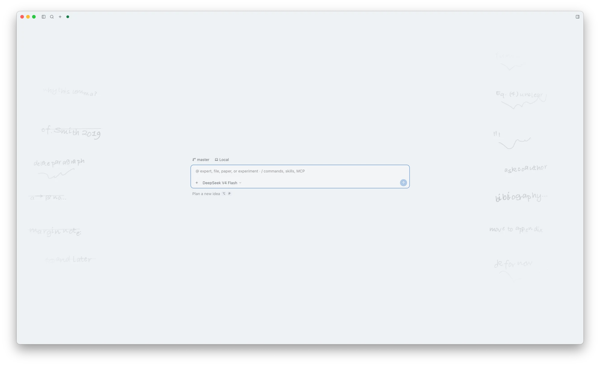
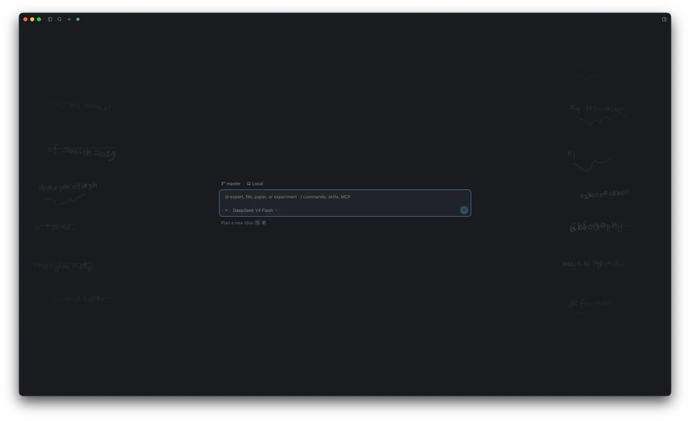
Light DarkLiterature, searched and shelved
Cross-database search across Crossref, arXiv, and OpenAlex. Two-way Zotero sync and MinerU PDF parsing. Continuous citation health audits verify .tex ↔ .bib ↔ library consistency.
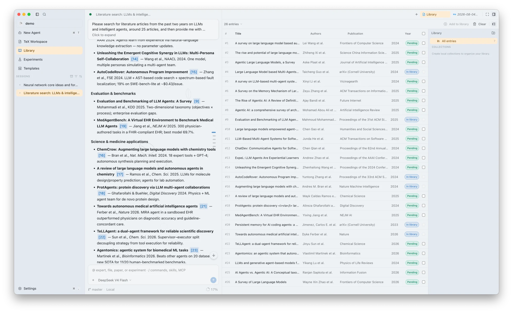
Reading with a co-pilot
Side-by-side PDF reader with section-linked margin notes. Ask questions about specific lemmas, experimental claims, or plots with automatic page citations.
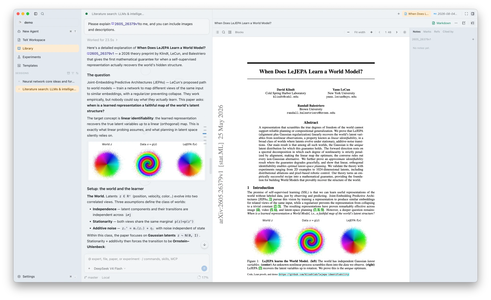
Intensive reading, formula by formula
Lasso any complex mathematical equation or theorem. The agent unpacks notation, verifies step-by-step derivations, and flags implicit assumptions.
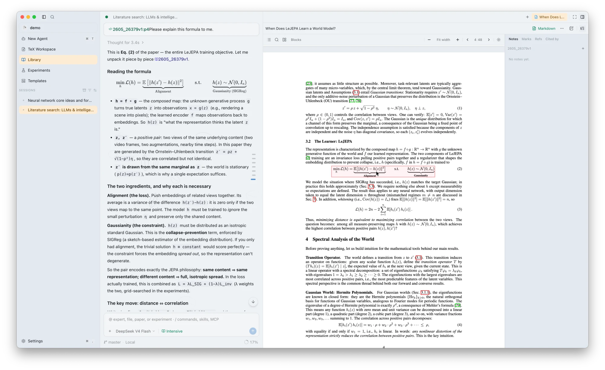
Notes that write back
Derivations, reading cards, and exploratory sketches live in project notes. The active Team structures, expands, and cross-references them as your ideas mature.
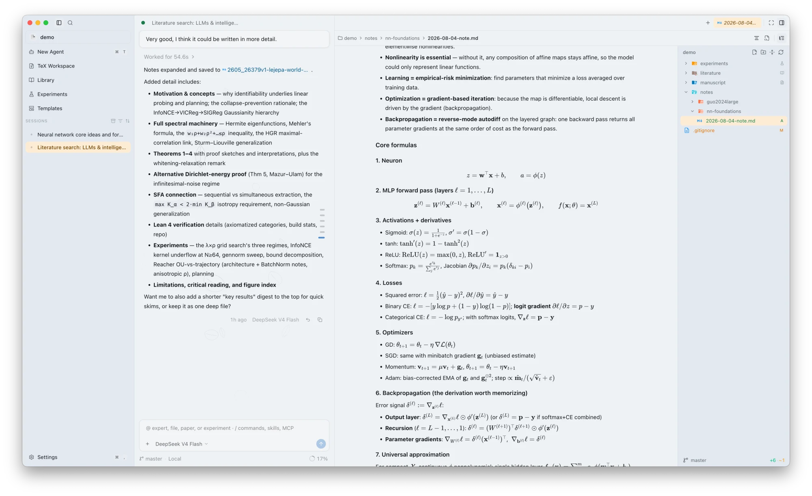
Experiments with provenance
The active Team formulates experimental matrices, dispatches jobs, and files complete receipts into runs.jsonl — command, exit code, runtime, stdout/stderr, and artifact links.
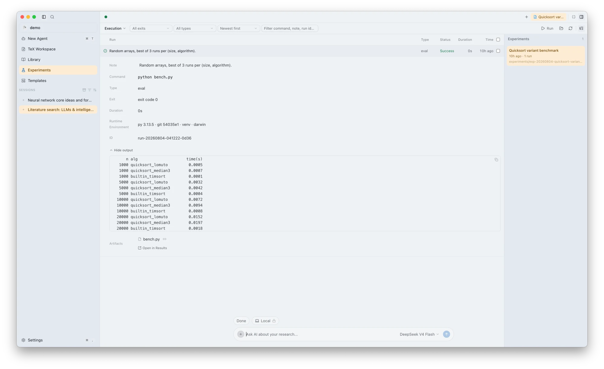
Git & Worktrees, built into the workspace
Every step lands in Git. Side-by-side visual diffs, branch management, and isolated worktree checkouts directly inside the desktop environment.
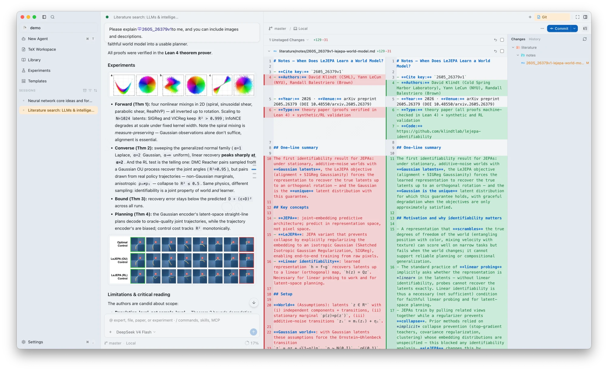
First-class LaTeX authoring
A native TeX workbench: document outline, instant PDF synchronization, bundled Tectonic compilation, and Proposed Changes review for human-in-the-loop draft editing.
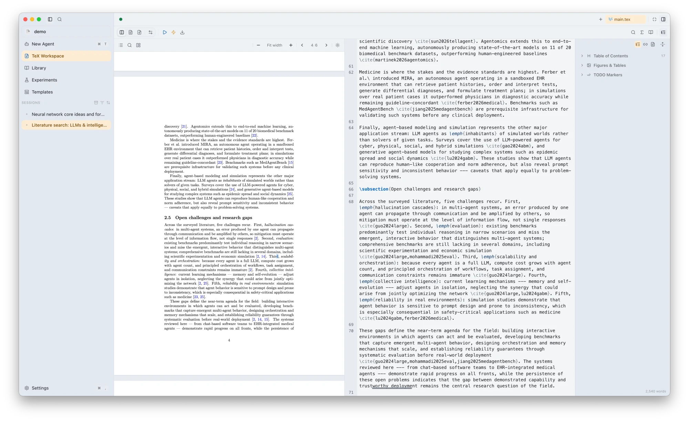
Every provider, your keys
DeepSeek, Claude, Gemini, GPT, Grok, Kimi, Qwen, MiniMax, or local custom endpoints. Switch providers mid-session with full BYOK privacy.
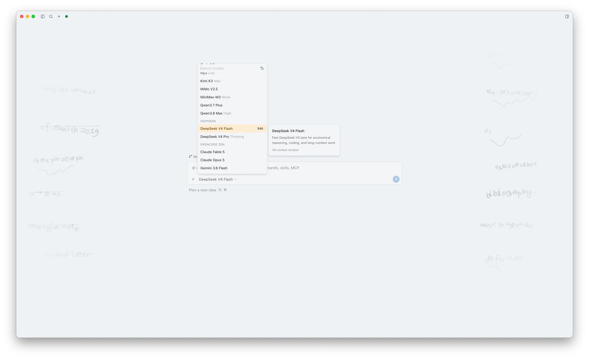
Interactive research, human in the loop
The team proposes, you dispose: Plans require explicit consent, file changes provide visual diffs, and permission modes enforce strict boundaries.
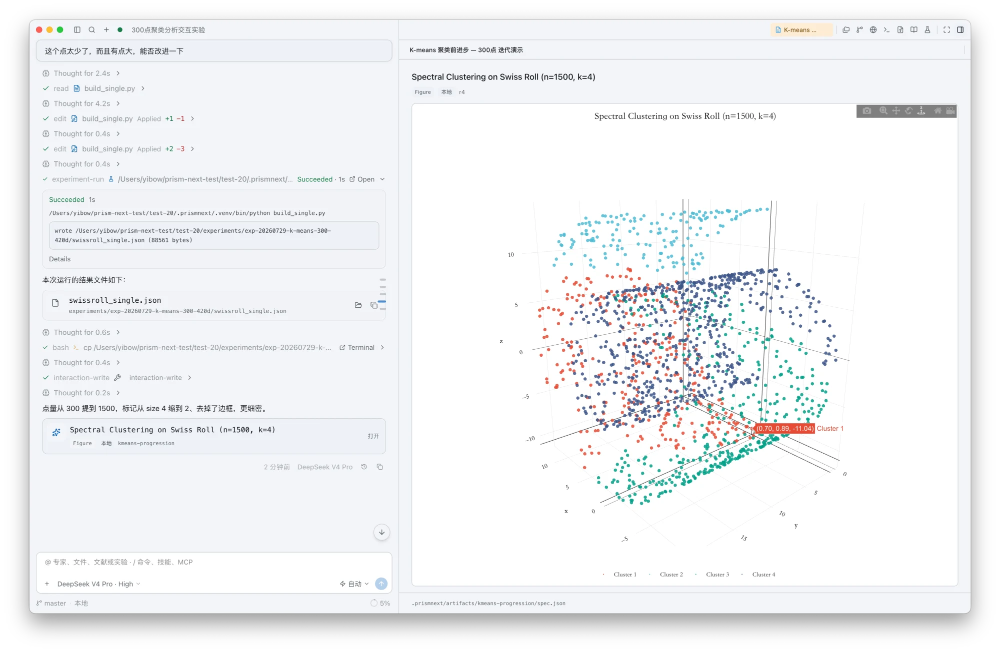
Research standards, codified (29 Skills)
29 bundled scientific skills in PrismNext Core — each complete with formal protocol tables, LaTeX templates, and verification scripts.
Ideate, design & run · 7
Idea labDivergence before judgment, ideas persisted in dedicated folders.Hypothesis designSharpen a research question into falsifiable hypotheses.Experiment design matrixFix factorial / ablation matrix and compute budgets before execution.ML experiment protocolMulti-seed discipline, baseline fairness, aggregation scripts.Statistical rigorTest selection, effect sizes, power analysis scripts.Management & decision scienceDiD / IV / RDD econometric battery and behavioral experiment checks.Experiment-to-MethodsConvert execution receipts into publication-ready Methods prose.
Writing · 7
Writing designOutline gate before prose: promise map and argument arcs.IntroductionProblem-driven, contribution-first, or story-arc structures.PreliminariesNotation tables, problem setup, and symbol consistency.Methods chapterMotivation-driven structure backed by experiment receipts.ResultsNumbers carry run ids; negative results reported honestly.ConclusionResolves Introduction questions and articulates real limitations.Related workLibrary-to-synthesis narrative with grounded citations.
Figures · 5
Matplotlib figuresColorblind-safe styling and journal dimension guidelines.Observable Plot figuresDensity, hexbin, facets, geo views — headless SVG generation.TikZ & pgfplotsCompilation-ready TikZ / pgfplots templates.Figure pipelineData → figure script → LaTeX inclusion end-to-end.Panel figuresInteractive RightArea figures and plot contracts.
Reading & review · 5
Intensive reading notesStructured extraction and argument breakdown from PDFs.PRISMA systematic reviewPRISMA 2020 protocol, screening log, and flow counts.Critical reviewDevil's advocate peer review across claims, proofs, and evidence.Manuscript preflightPre-submission gate: compilation, citations, desk-reject risks.Rebuttal letterPoint-by-point reviewer rebuttal drafting.
Math & meta · 5
Symbolic mathSymPy-verified derivations exported directly to LaTeX.Numeric verificationSeeded probes, convergence orders, and worst-case error bounds.Manifold & geometryConnections, curvature, geodesics, gauge invariants verification.Lattice & algebraGröbner-basis membership, LLL lattice equivalence, number fields.Skill creatorDistill reproducible research workflows into custom skills.
§4 Pro Specialty Teams & Early Access
Beyond the open-core Core suite, PrismNext provides specialized multi-agent teams for high-stakes research milestones.
Multi-agent debate on research ideas: steel-man, devil's advocate, historian, and pragmatist stress-testing feasibility before compute.
Simulated conference/journal program committee: Area Chair + 3 independent Reviewers generating decision memos.
Point-by-point review triage, experimental feasibility matrix, and diplomatic rebuttal drafting.
Paper submission deadline tracking, critical-path dependency management, and structured drafting sprints.
Audits claims against evidence in the manuscript, flagging overclaiming, unsupported theorems, and missing baselines.
Cross-disciplinary concept mapping (e.g. bridging CS formalisms with economics/biology methodology).
Turn a vague research interest into testable hypothesis cards through deliberate divergence, convergence, and a documented kill list.
Keeps a durable record of closed ideas, their closure reasons, and the conditions required to reopen them.
§5 Axioms
Axiom 1 (Locality). Your projects stay strictly on your local machine.
Axiom 2 (Privacy). No product telemetry or analytics. We do not collect usage data or operate a PrismNext cloud.
Axiom 3 (Keys). Model calls route directly to providers using your own API keys — no Prism cloud, no middleman.
Axiom 4 (Veto). Every automated move is gated and auditable; the researcher retains absolute veto power.